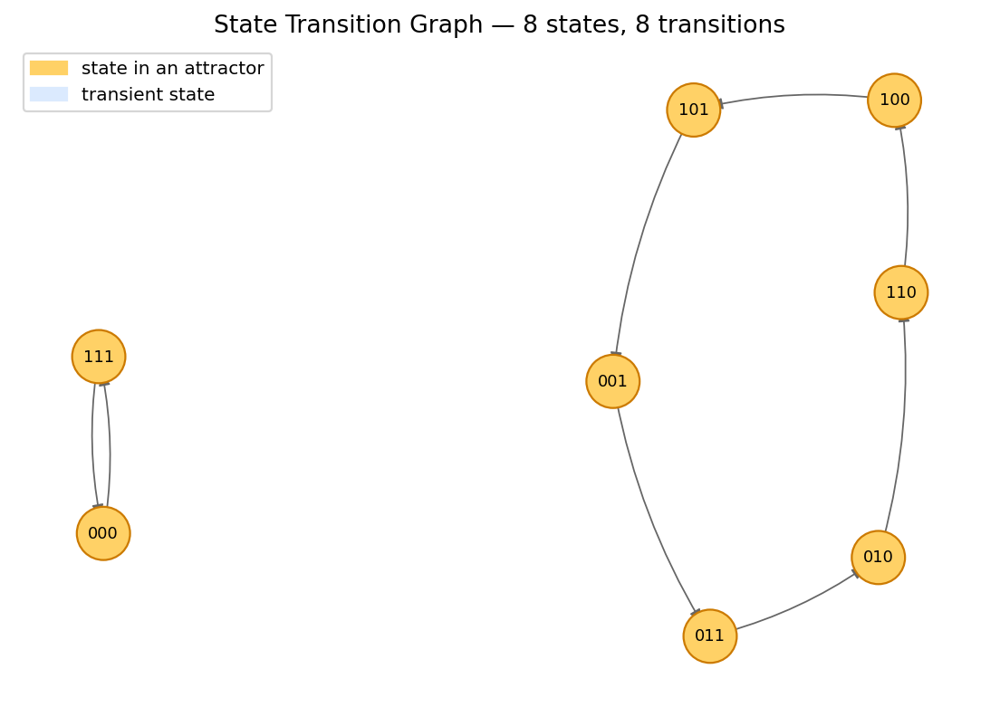
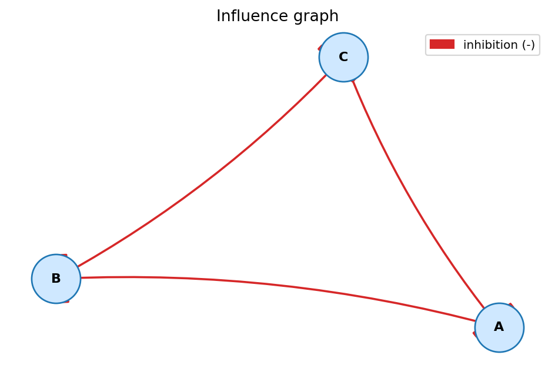
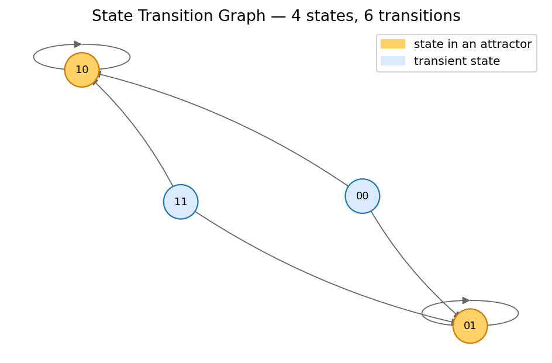
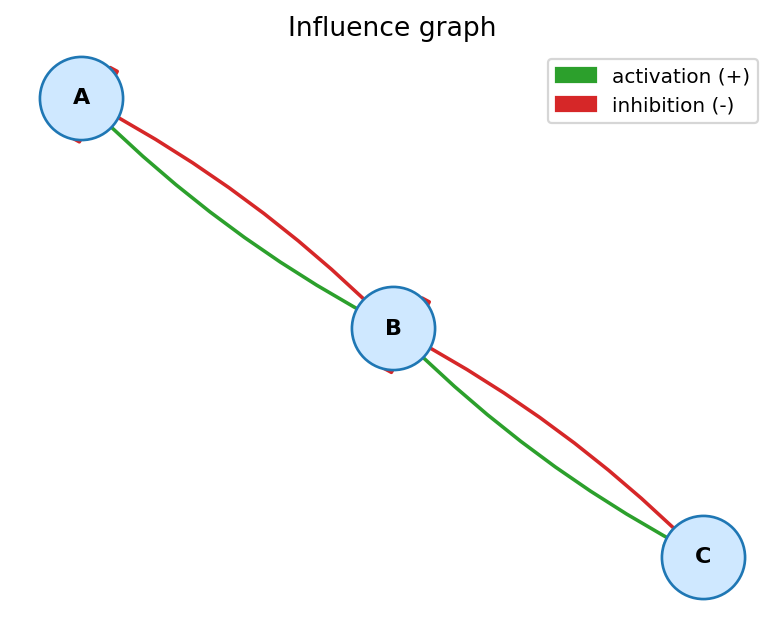

.bnet file.A Python toolkit and Streamlit web app that imports a Boolean network, visualizes its influence graph, builds the state-transition graph under both synchronous and asynchronous update schemes, and computes every attractor — fixed points, cyclic, and complex.
The live demo runs entirely in your browser — no install, no backend.

Every requirement of the assignment is implemented and visible inside the Streamlit UI.
.bnetRobust parser for the standard PyBoolNet/BoolNet format, with inline comments, word/symbolic operators, and friendly errors.
Sign-annotated regulator graph — activation (+), inhibition (-), or non-monotonic (?).
Build the full state-transition graph under either update scheme, color-coded by which states are part of an attractor.
Find every terminal SCC: fixed points, cyclic, and complex attractors — with their basins of attraction.
Generated directly by the analyzer from the bundled sample files.

repressilator.bnet).

toy_switch.bnet).Python 3.9+ and a couple of standard libraries are all that you need.
# 1. Clone the repository git clone https://github.com/<your-username>/boolean-network-analyzer.git cd boolean-network-analyzer # 2. Create a virtual environment (optional but recommended) python -m venv .venv source .venv/bin/activate # on Windows: .venv\Scripts\activate # 3. Install dependencies pip install -r requirements.txt # 4. Launch the Streamlit app streamlit run app.py # Or run the test suite PYTHONPATH=src pytest -v
The app opens at http://localhost:8501. Pick a sample
from the sidebar or upload your own .bnet file.
Five reference Boolean networks ship with the project for instant experimentation.
| File | Nodes | About |
|---|---|---|
toy_switch.bnet | 3 | Pedagogical example with a single length-4 cyclic attractor. |
bistable_toggle.bnet | 2 | Mutual repression — two stable steady states (Gardner et al. 2000). |
repressilator.bnet | 3 | Cyclic mutual repression — synchronous cycle of length 6. |
fission_yeast.bnet | 9 | Reduced S. pombe cell-cycle model (Davidich & Bornholdt 2008). |
mammalian_cell_cycle.bnet | 10 | Reduced mammalian cell-cycle model (Faure et al. 2006). |
Every bundled network has its attractors re-derived by the analyzer and compared to the values reported in the original publication. Both engines (Python and the in-browser JavaScript port) return identical results on every (network × scheme) configuration.
| Network | n | Sync attractors (kind / basin %) | Async attractors (kind / basin %) | Verdict |
|---|---|---|---|---|
toy_switch (pedagogical) |
3 | 1 cyclic-4 (100 %) | 1 complex-8 (100 %) | OK |
bistable_toggle (Gardner 2000) |
2 | 2 fixed pts (25 % each) + 1 cyclic-2 (50 %, sync artefact) | 2 fixed pts (75 % each, weak basins overlap) | MATCH bistability |
repressilator (Elowitz 2000) |
3 | 1 cyclic-6 (75 %) + 1 cyclic-2 (25 %, artefact) | 1 cyclic-6 (100 %) | MATCH oscillation |
fission_yeast (Davidich 2008) |
9 | 3 cyclic-2: basins 456 / 50 / 6 (89.1 / 9.8 / 1.2 %) | 1 complex-8 (100 %) | MATCH G1 dominance |
mammalian_cell_cycle (Faure 2006) |
10 | 1 fixed pt (G0, 50 %) + 1 cyclic-7 (50 %) | 1 fixed pt (50 %) + 1 complex-112 (50 %) | MATCH cycling region |
How to reproduce: click ▶ Try the live demo,
pick each sample from the sidebar and toggle the update scheme. The
Attractors tab shows the kind / size / basin of every attractor.
See §6.5 Benchmark Validation in the report for the full discussion.
Python reference engine and an in-browser JavaScript port (≈40 kB, no install). Identical outputs on every benchmark.
5 published Boolean networks — bistable toggle, repressilator, two cell-cycle models — with explicit verdict per case.
Synchronous and asynchronous STGs in the same UI, so the sync-only artefacts are immediately visible.
Parser, sign inference, sync/async successors, attractor classification: every layer is unit-tested.